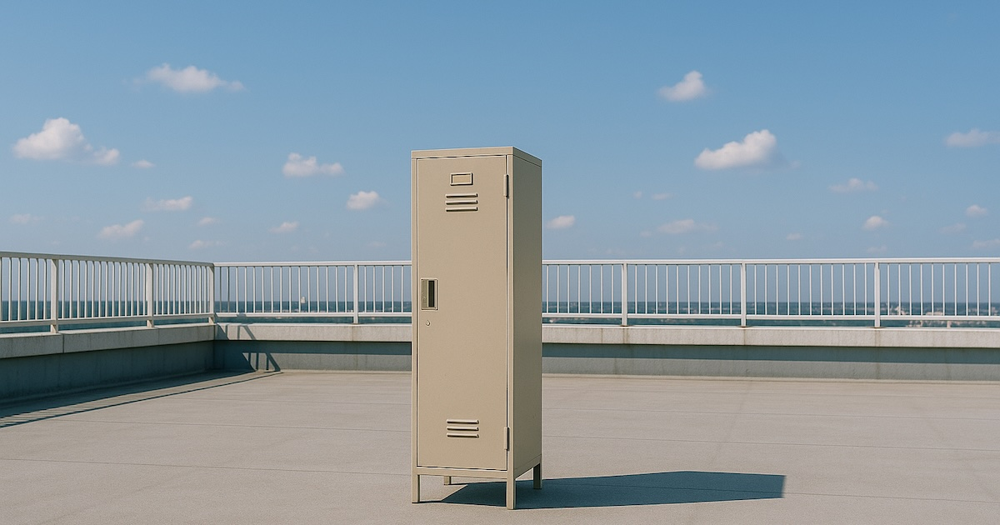

ボイスドラマ「文化祭」〜あるいは「やまさん」というクリエイターについて〜
そんじょそこらでお金を払ったとしても到底聴くことができない稀有なボイスドラマを、YouTubeで無料で聴けると言われたら、あなたは信じますか? いまからわたしが紹介するのは、まさにそのようなクリエイターの一人、ボイドラ界の鬼才、やまさんについて。取り上げるのは、やまさん初期の作品「文化祭」。
やまさん作品でたびたび取り上げられるキャラクターの特性として、異質な存在、なじまない存在、あるいは浮いてる存在というものがある。本作の主人公、飯塚裕司もそういう人物だ。彼は、輝かしい未来を信じてある私立高校に入学した。きっとそれまでの彼の人生はまわりになじむことのできない人生だったんだと思う。新しい環境でそれが変わると、やったことのないプレゼンまで両親にして、強く信じた。けれど、蓋を開けてみれば同じだった。実は、彼には確固たる理由があって同級生達から一歩引かれる状況が生じているんだけど、彼自身はなぜなのかまったく理解できていない。あるいは完全に目を背けている。これ、やまさん作品においてはしばしばそうで、主人公はまわりから距離を置かれているにも関わらず、本人自身はものすごくポジティブだったりする。自分はふつうの人生を送って当然だと考えている。無自覚。しかしその無自覚さがかえってまわりを苛立たせる。本作は全10話全12人の主要キャラクターで構成されるけど、最後の2話までは、主人公がいかにクラスで異質なものになってしまっているかという描写が延々と繰り返される。学校で問題化されるような明確ないじめとかではない。けれど、ある理由から、けっしてだれも彼と距離を近付けようとはしない(理由が何なのかはご自身で確かめてください)。
あまりハッピーそうとは言えないこのボイスドラマ、さてさてどんな気分で聴けばいいだろうか。ここで、やまさん作品の聴き味という話をしたい。多くのやまさん作品に言えることだけど、聴いていると、考えたくないことを無理やり考えさせられる。あるいは、見たくない自分の内面に無理やり目を向けさせられる。人によっては違うかもしれないけど、わたし自身は大部分の他の人と同じく、何の変哲もない平均的な人生を歩んできた。多少のいじめらしいことを受けたこともあるし、逆に弱いものいじめに加担したこともある。つまり、クラスの一部として溶け込んでいた。飯塚がクラスにいたら、間違いなく彼を異物扱いしていたうちの1人だっただろう。しかし、物語は当然、主人公飯塚の視点で語られ進行していく。感情移入するのは主人公の側だ。クラスのやつらはなんて酷い扱いをするんだろう。ちゃんと平等に扱ってやれよ。そう感じるように作られている。けど、ほんとうか？お前のクラスに飯塚がいたら、対等に扱えたのか？飯塚を排除したはずの自分が飯塚に共感、あれ、おかしいな。矛盾が生じてしまっている。これがまさにやまさん作品の典型的な聴き味なのです。なんとも聴き心地の悪く、気持ちよくなれない。こんなのエンタメじゃないよ。たしかに、文化祭を含むいくつかのやまさん作品は、エンタメではないのかもしれない。
しかし、勘違いして欲しくない！これだけで終わったら、なんだそこらにある自己満オナニーの押し付け作品じゃないかと思われてしまうだろう。違う、そうではない。やまさん作品が一線を画するのは、その音声演出•編集技術なのだ。やまさん作品には、色んな音があって本能的に楽しい。とくに、曲合わせのセンスは逸品だ。シーンの切り替えで、ぴったりマッチした曲が流れて聴く側の気分を盛り上げてくれる。アニメ演出における音楽の重要性を強調したのは、カウボーイビバップの渡辺信一郎監督だった。ビバップでは、切り替わるシーンに合わせて適切に、完璧なタイミングで超かっこいい曲が流れて、観るものを気持ちよくさせてくれましたよね？ああいう気持ちよさが、この文化祭でも味わえる。だから、こんな気持ちよくなれないテーマでも、なんだかエンタメを観ているような気分で聴けてしまうわけだ。これがやまさん作品の魔術。キマってるBGMの気持ちよさを味わいたいなら、やまさんの「Bullshit Jobs」もおすすめ。しかもこっちは、小難しく高尚なテーマみたいなのはたぶんなくて、純粋エンタメ。おんもしろいよー(※ただし、かなりエグいエログロなので注意)。
わたし、ボイスドラマというジャンルには興味があって、商業•非商業を含め、たぶんふつうの人よりは聴いてるのだけど、全部ひっくるめた中でも、やまさん作品は間違いなく稀有だと言える。もちろん、純粋に録音環境とか技術的なことで言ったら、それは同人ボイドラが商業に叶うべくもない。だけど、商業ボイドラに、こんなにギラついてて、工夫や情念が込められてて、心に深く刺さってくる作品がたくさんありますかね。声優の演技と音声技術がすごいってだけで、あんまり魂には響いてこない。それがわたしが典型的な商業ボイドラに対して持ってるイメージです(※あくまでわたしの主観ですので)。そこらのふつうのボイドラに飽き飽きしてて、おもしろいボイドラ聴いてみたいなら、やまさん作品を手にとってみて欲しいのですよ。